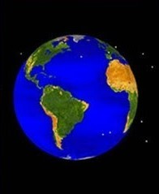
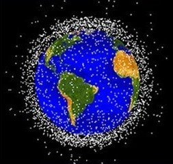
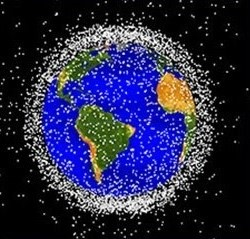
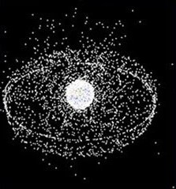
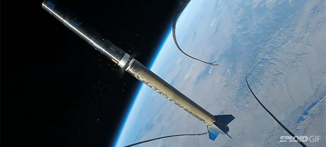
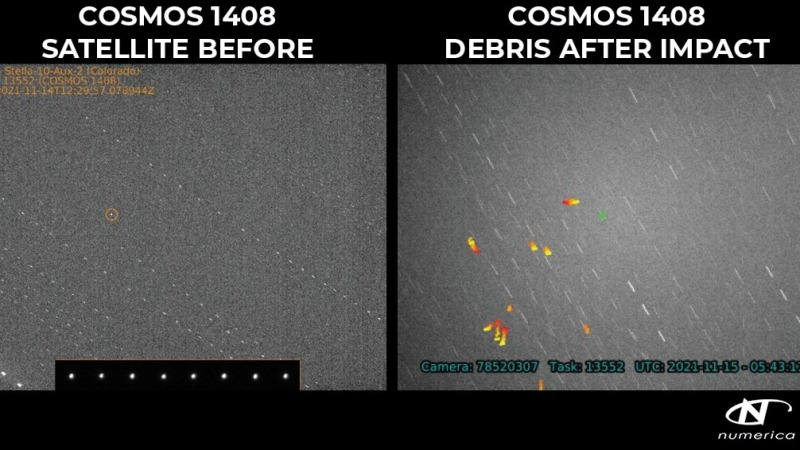

Scroll
Colliding with launches
Crashing satellites
Interruptions in Communications

Anti-Satellite Missile Tests - large contributors
Fengyun - 3,549 Kosmos2 - 1,716; Kosmos1 - 1,562
US Air Force tracks over 10K.
Accessible through the Space-Track API
Cosmograph
/ˈkɒzməɡrɑːf/ (noun)
A device that prints the ID of a space debris object passing above it.
The design is inspired by a seismograph used for earthquakes.
The printer uses a laser for a precise reading and to depict the detection method
used to track these objects.
Thanks! By Aditya Agarwal.